Code
## Import libraries ----
import pandas as pd
import matplotlib.pyplot as plt
import seaborn as sns
## Load the data ----
sales = pd.read_excel("data/SampleData.xlsx",
sheet_name = "SalesOrders")Independent Data Analysis Project
John Karuitha ![]()
“This analysis, conducted using Python and Pandas, delves into a dataset comprising 43 observations and 8 variables related to sales transactions. The primary objectives include identifying the region with the highest sales, pinpointing top-performing sales representatives, determining the best-selling item, and uncovering monthly variations in sales. The results highlight the exceptional dominance of the Central region, contributing over 60% of total sales. Sales representatives Kivell and Parent emerge as frontrunners, while binders stand out as the most popular item. Furthermore, the analysis unveils seasonal variations, with December and July recording peak sales, and March experiencing a notable dip. These findings offer actionable insights for strategic decision-making, emphasizing the significance of regional, individual, and temporal considerations in optimizing sales efforts and business performance. The use of Python and Pandas demonstrates the efficacy of data-driven approaches in extracting meaningful patterns and trends from complex datasets, paving the way for informed decision-making in dynamic business environments.”
In today’s dynamic business landscape, data-driven insights play a pivotal role in informed decision-making. The analysis at hand delves into a comprehensive exploration of sales data, utilizing the power of Python and Pandas to unravel key patterns and trends. Focused on variables such as ‘orderdate,’ ‘region,’ ‘sales rep,’ ‘item,’ ‘units sold,’ ‘unit cost,’ ‘total,’ and ‘month,’ this study seeks to address critical questions surrounding regional sales dominance, the performance of sales representatives, the most sought-after items, and the identification of peak sales months. By leveraging the capabilities of Python and the versatility of Pandas, this analysis aims to provide actionable insights that will empower strategic business decisions, contributing to enhanced sales performance and overall organizational success.
The analysis seeks answers to the following questions.
Which region has the highest sales?
Which sales representative has the highest sales?
Which item sold the most?
Which month has the highest sales.
Summary of Sales Analysis:
In conclusion, the analysis provides a comprehensive overview of the sales landscape, highlighting the dominance of the Central region, the exceptional performance of sales representatives Kivell and Parent, the popularity of binders as the best-selling item, and the varying sales patterns across different months. These insights offer valuable strategic considerations for optimizing sales efforts, inventory management, and overall business planning.
## Import libraries ----
import pandas as pd
import matplotlib.pyplot as plt
import seaborn as sns
## Load the data ----
sales = pd.read_excel("data/SampleData.xlsx",
sheet_name = "SalesOrders")The dataset under consideration comprises 43 observations and encompasses 8 distinct variables, each offering valuable insights into the sales dynamics.
sales.shape(43, 7)sales.info()<class 'pandas.core.frame.DataFrame'>
RangeIndex: 43 entries, 0 to 42
Data columns (total 7 columns):
# Column Non-Null Count Dtype
--- ------ -------------- -----
0 OrderDate 43 non-null datetime64[ns]
1 Region 43 non-null object
2 Rep 43 non-null object
3 Item 43 non-null object
4 Units 43 non-null int64
5 Unit Cost 43 non-null float64
6 Total 43 non-null float64
dtypes: datetime64[ns](1), float64(2), int64(1), object(3)
memory usage: 2.5+ KBHere’s a brief description of the key variables:
orderdate: This variable denotes the date when the sales transactions occurred, providing a chronological context to the data.
region: This categorical variable represents the geographical regions associated with the sales transactions. Analyzing this variable can unveil patterns in regional sales performance.
rep: Designating the sales representatives involved in each transaction, this variable allows for an assessment of individual sales performance.
item: Describing the specific products or items sold, this categorical variable enables the identification of the most popular or frequently purchased items.
units: This quantitative variable denotes the number of units of each item sold in a given transaction, providing a measure of sales volume.
unit cost: Reflecting the cost per unit for the items sold, this variable is crucial for understanding the financial aspects of the transactions.
total: Likely representing the total sales revenue for each transaction, this variable is a key metric for assessing overall sales performance.
month: This variable categorizes the transactions by month, allowing for a temporal analysis of sales patterns over the dataset.
In summary, the dataset captures a snapshot of sales activities with a focus on the date, regional distribution, sales representatives, specific items, sales volume, unit costs, total revenue, and temporal aspects. Exploring these variables will facilitate a nuanced understanding of the sales dynamics, enabling actionable insights for strategic decision-making in the analyzed domain.
Let us look at the first and last few observations of the data.
sales.head() OrderDate Region Rep Item Units Unit Cost Total
0 2021-01-06 East Jones Pencil 95 1.99 189.05
1 2021-01-23 Central Kivell Binder 50 19.99 999.50
2 2021-02-09 Central Jardine Pencil 36 4.99 179.64
3 2021-02-26 Central Gill Pen 27 19.99 539.73
4 2021-03-15 West Sorvino Pencil 56 2.99 167.44sales.tail() OrderDate Region Rep Item Units Unit Cost Total
38 2022-10-14 West Thompson Binder 57 19.99 1139.43
39 2022-10-31 Central Andrews Pencil 14 1.29 18.06
40 2022-11-17 Central Jardine Binder 11 4.99 54.89
41 2022-12-04 Central Jardine Binder 94 19.99 1879.06
42 2022-12-21 Central Andrews Binder 28 4.99 139.72I check the data for missing values and duplicates. First, we see that the data has no missing values.
sales.isna().sum()OrderDate 0
Region 0
Rep 0
Item 0
Units 0
Unit Cost 0
Total 0
dtype: int64Neither are there duplicates.
sales.duplicated().sum()0I Then summarise the data. First, I look at summary statistics for numeric valriables.
sales.describe() Units Unit Cost Total
count 43.000000 43.000000 43.000000
mean 49.325581 20.308605 456.462326
std 30.078248 47.345118 447.022104
min 2.000000 1.290000 9.030000
25% 27.500000 3.990000 144.590000
50% 53.000000 4.990000 299.400000
75% 74.500000 17.990000 600.180000
max 96.000000 275.000000 1879.060000Then I do a summary of character variables.
sales.describe(include = 'object') Region Rep Item
count 43 43 43
unique 3 11 5
top Central Jones Binder
freq 24 8 15To see the correlation between the numeric variables, I run a correlation test. We see a positive correlation between units sold and total sales in US$. There is a negative correlation between unit cost and the number of units sold in line with the law of demand.
sales.corr(numeric_only = True) Units Unit Cost Total
Units 1.000000 -0.392016 0.408099
Unit Cost -0.392016 1.000000 0.209500
Total 0.408099 0.209500 1.000000I convert the column names into lower case and eliminate gaps in cloum names with an underscore.
## Clean column names ----
sales.columns = sales.columns.str.lower()
sales.rename({"unit cost":"unit_cost"}, inplace=True)
sales.head() orderdate region rep item units unit cost total
0 2021-01-06 East Jones Pencil 95 1.99 189.05
1 2021-01-23 Central Kivell Binder 50 19.99 999.50
2 2021-02-09 Central Jardine Pencil 36 4.99 179.64
3 2021-02-26 Central Gill Pen 27 19.99 539.73
4 2021-03-15 West Sorvino Pencil 56 2.99 167.44Finally, I create a pairs plot of all variables in the data set, just to get a picture of their overall distribution.
## Pairs plot ----
sns.pairplot(sales, corner=True, palette="rocket")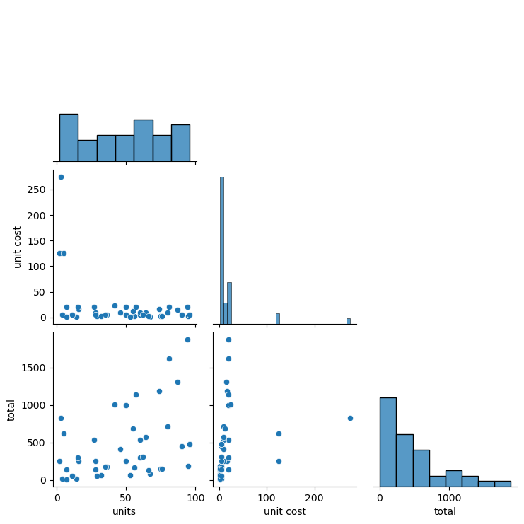
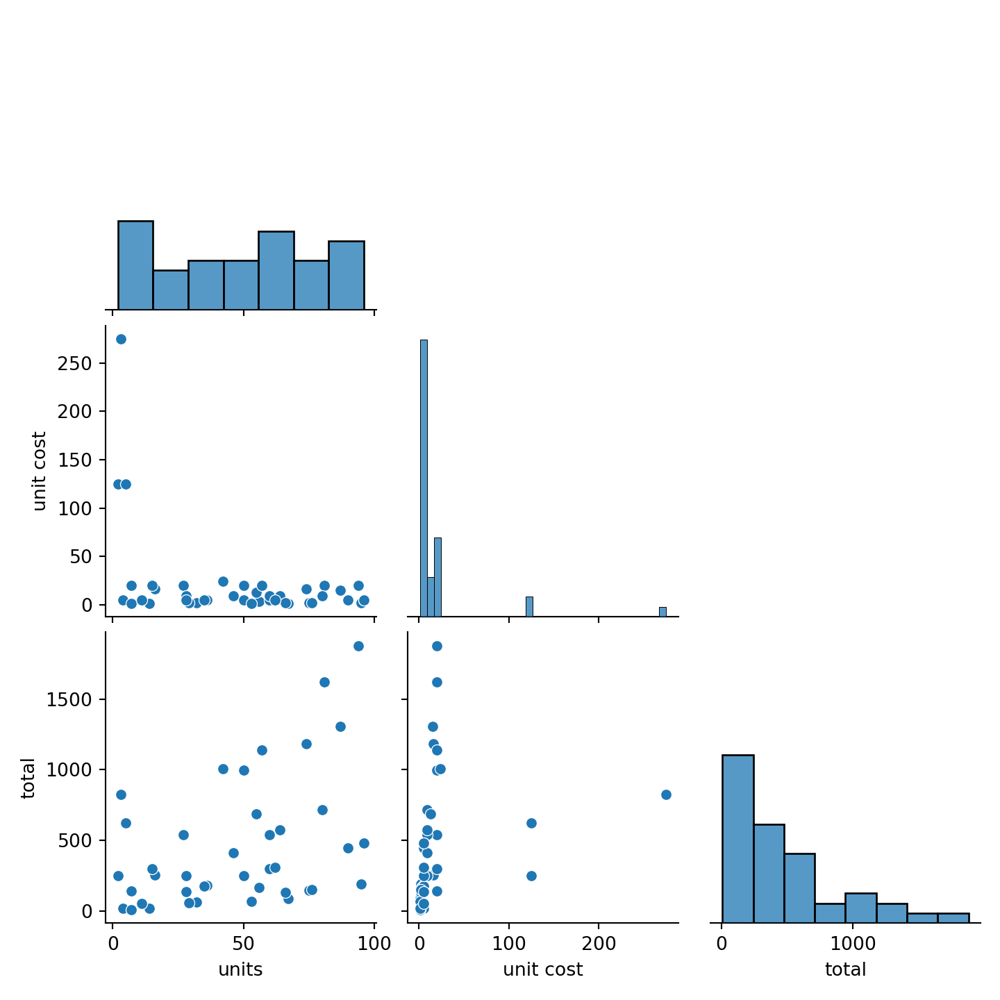
Just to get a taste of what is to come, let us see the regions and their associated sales. We see how dominant the central region is. More on that later.
## Pairs plot ----
sales['region'].value_counts().plot(kind = "barh")
plt.title("Sales by Region")
plt.xlabel("Region")
plt.ylabel("Count")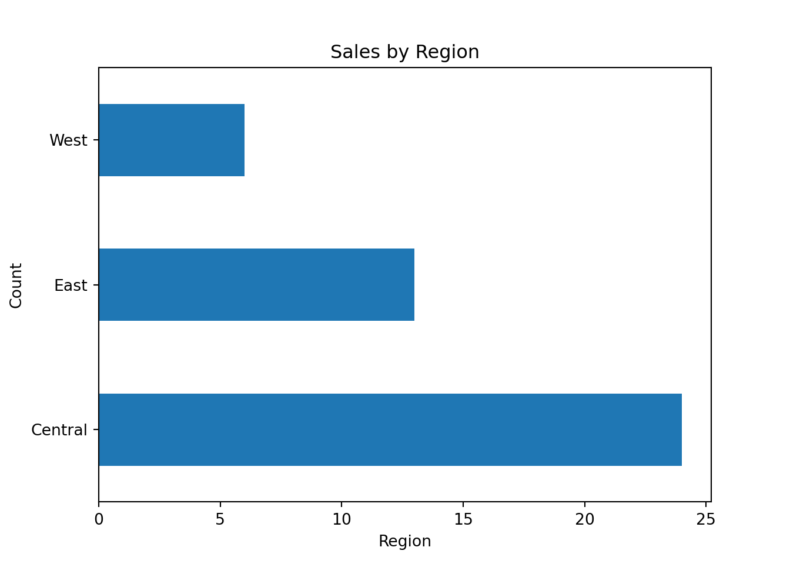
Regional Sales Dominance:
The analysis underscores the substantial dominance of the Central region in total sales, surpassing the contributions of other regions. With over 60% of the total sales attributed to the Central region, strategic considerations should be given to understanding the factors driving this regional success. Potential avenues for further exploration include regional consumer preferences, targeted marketing strategies, or unique economic conditions that contribute to this remarkable performance.
### Total sales by region
sns.pairplot(sales, hue = "region",
corner=True, palette="rocket")
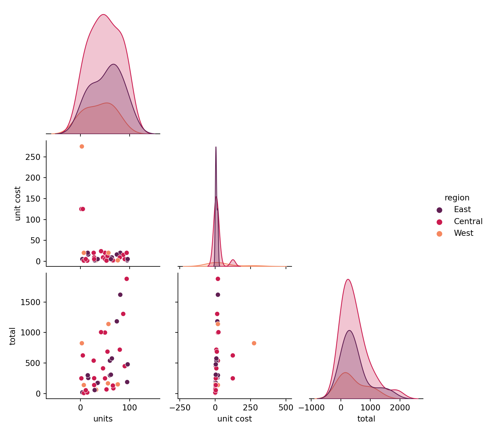
Let us look at the graph of sales by region.
sales.groupby("region")["total"].sum().plot(kind="pie")
plt.title("Total Sales by Region")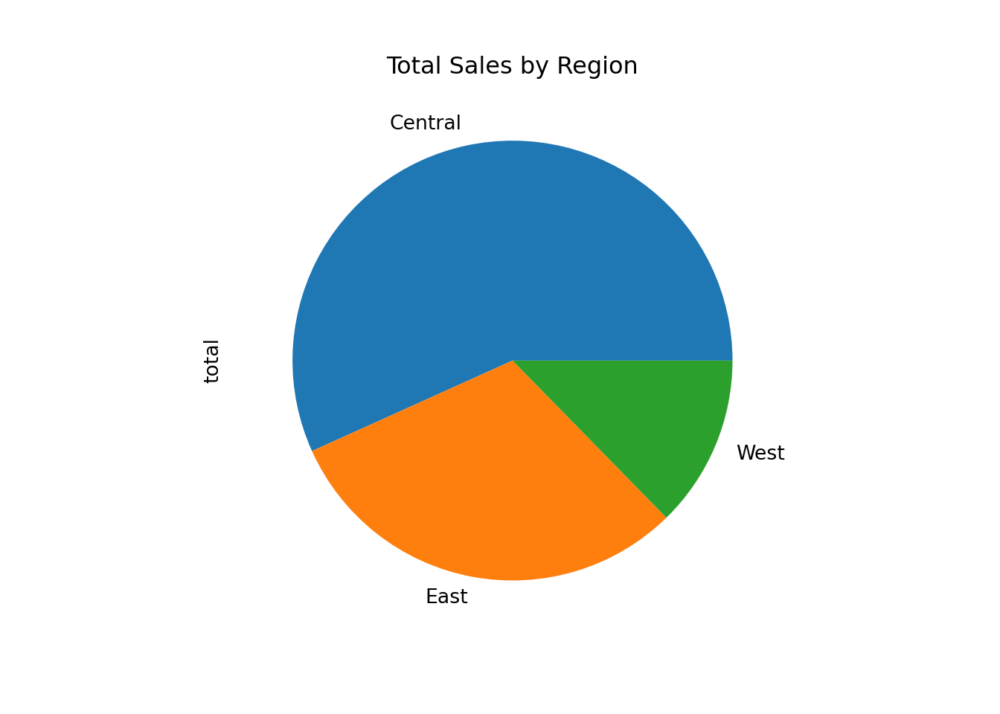
Top Sales Representatives:
The identification of Kivell and Parent as the top-performing sales representatives emphasizes the impact of individual contributions to overall sales success. Recognizing and leveraging the strengths of these sales representatives can inform training programs, mentorship initiatives, or even incentive structures to encourage similar high-performance behavior across the sales team. Understanding the tactics and strategies employed by these top performers may also provide valuable insights for improving the overall effectiveness of the sales force.
### Total sales by rep
sns.pairplot(sales, hue = "rep", corner=True, palette="rocket")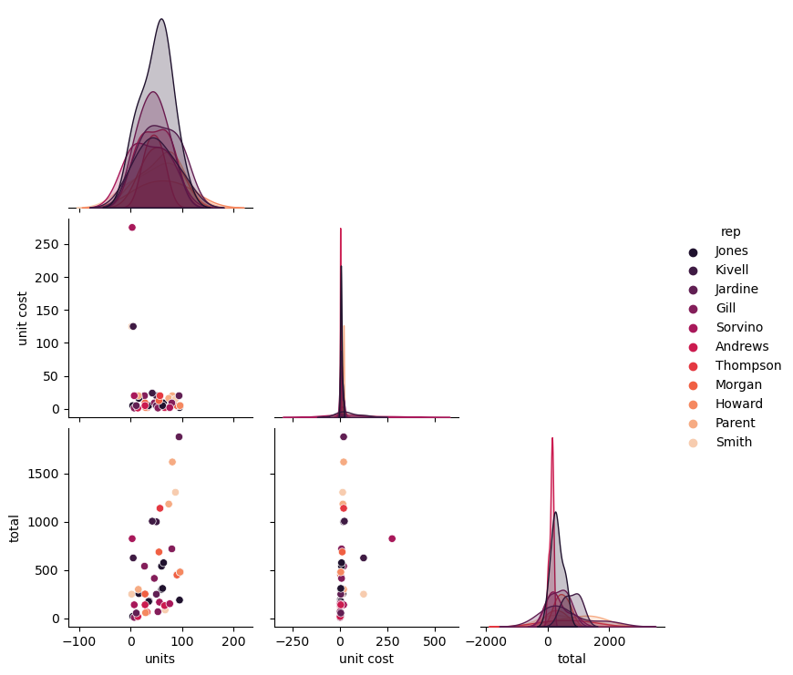
sales.groupby("rep")["total"].sum(). sort_values().plot(kind="barh")
plt.title("Total Sales by Sales Rep")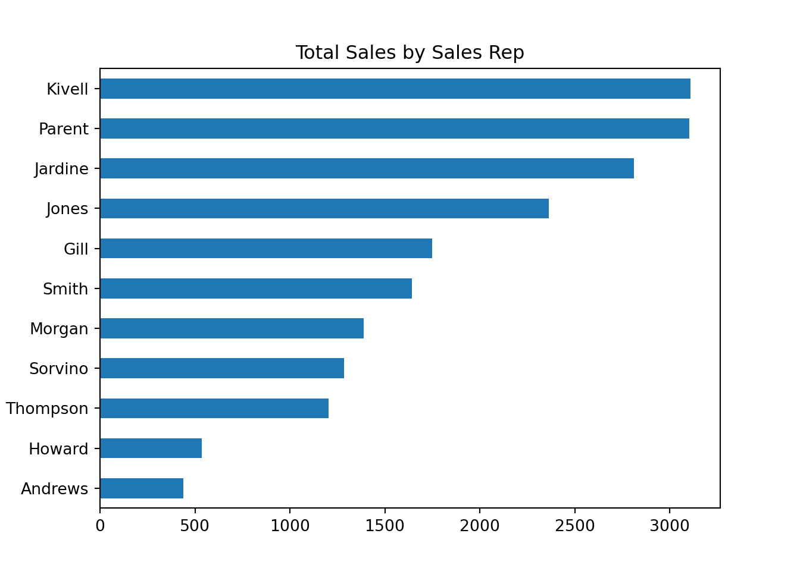
Best-Selling Item:
The prominence of binders as the best-selling item suggests a notable market demand for this product. Leveraging this insight, businesses can tailor marketing campaigns, optimize inventory management, or explore opportunities for bundling and cross-selling related items. Understanding the factors contributing to the popularity of binders can guide product development and procurement strategies to align more closely with customer preferences.
### Total sales by item
sns.pairplot(sales, hue = "item",
corner=True, palette="rocket")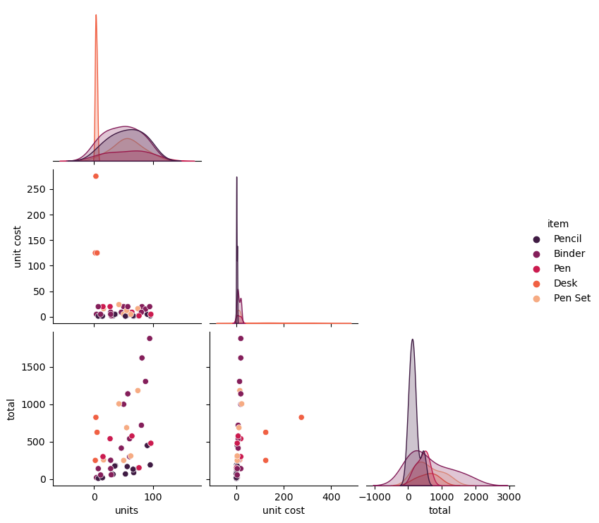
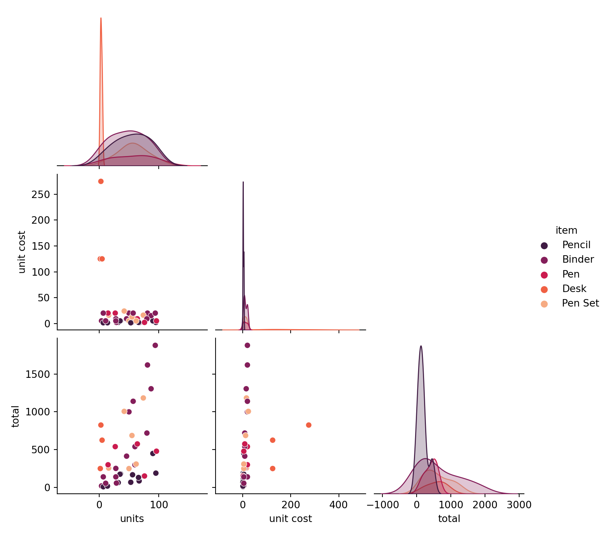
sales.groupby("item")["total"].sum(). sort_values().plot(kind="barh")
plt.title("Total Sales by Item")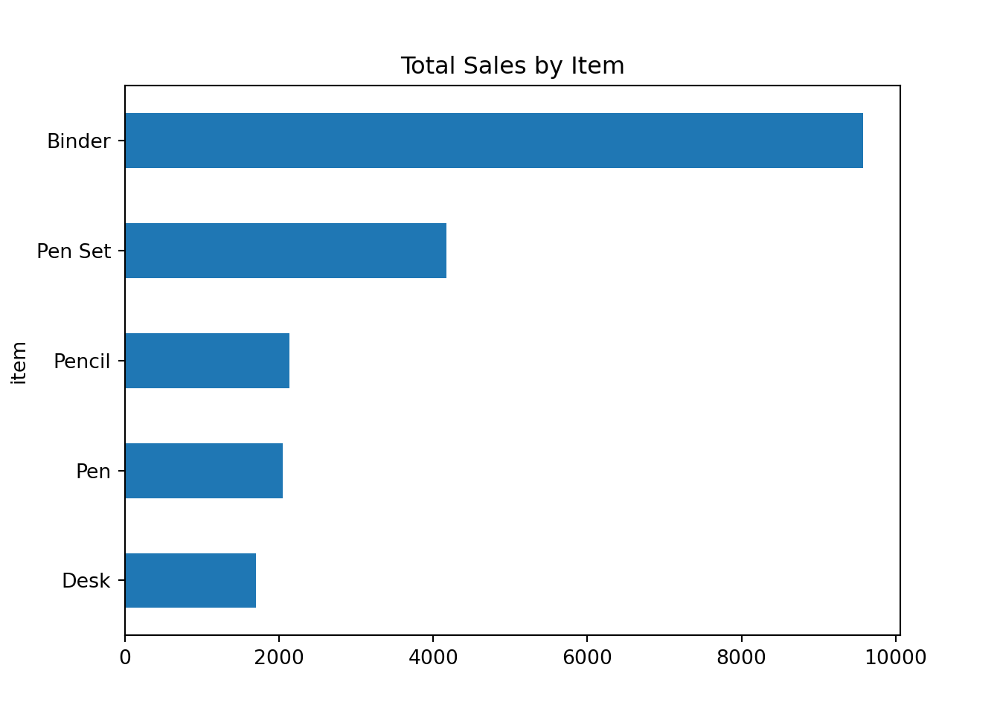
Peak Sales Months:
The variation in sales across different months highlights the importance of understanding and adapting to seasonal trends. December and July emerge as peak sales months, suggesting potential seasonality effects, such as holiday-related purchases. Conversely, the dip in sales observed in March warrants further investigation into potential contributing factors. Strategies such as targeted promotions, inventory adjustments, or marketing campaigns tailored to capitalize on peak months and mitigate slumps can be considered based on these findings.
### Total sales by month
sales["month"] = sales["orderdate"].dt.month
sns.pairplot(sales[["units", "total", "month"]], hue = "month",
corner=True, palette="rocket")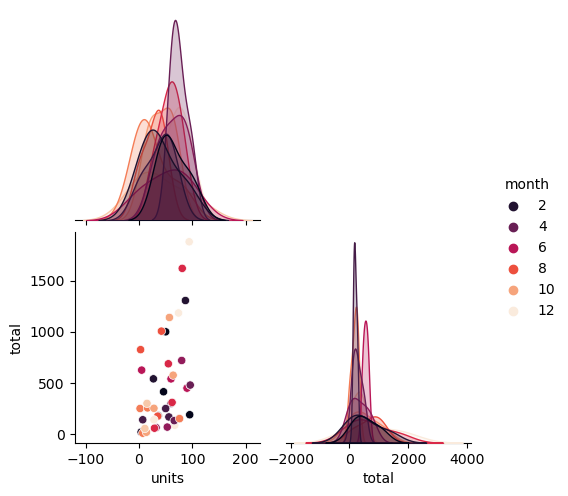
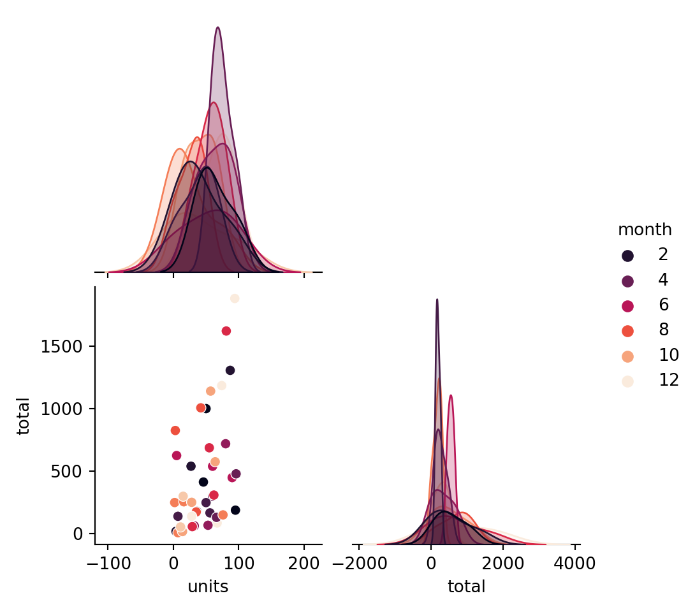
sales.head() orderdate region rep item units unit cost total month
0 2021-01-06 East Jones Pencil 95 1.99 189.05 1
1 2021-01-23 Central Kivell Binder 50 19.99 999.50 1
2 2021-02-09 Central Jardine Pencil 36 4.99 179.64 2
3 2021-02-26 Central Gill Pen 27 19.99 539.73 2
4 2021-03-15 West Sorvino Pencil 56 2.99 167.44 3sales.groupby("month")["total"].sum(). sort_values().plot(kind="barh")
plt.title("Total Sales by Month")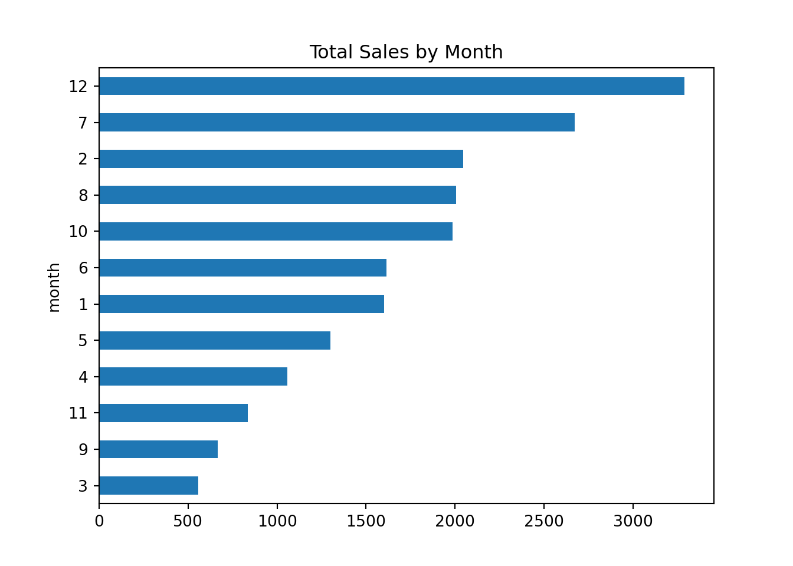
### Total Sales by Item and Month
sales.groupby(["month", "item"])["total"].sum().sort_values().plot(kind="barh")
plt.title("Total Sales by Item and Month")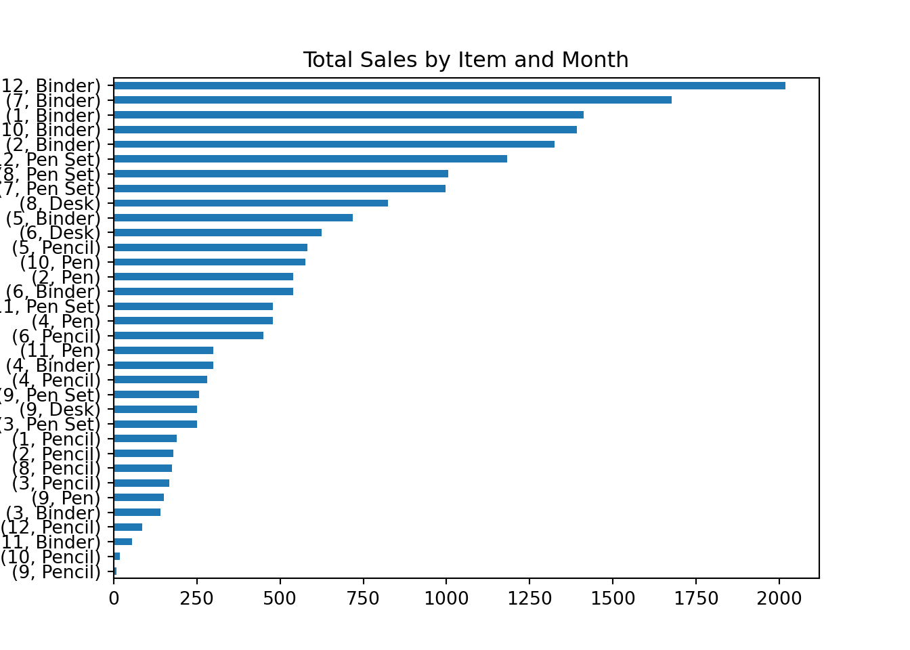
Overall Implications:
The collective insights drawn from these results provide a comprehensive understanding of the sales dynamics. Businesses can use this information to refine their sales strategies, optimize inventory management, and tailor approaches to regional and temporal variations. The combination of Python and Pandas in the analysis showcases the efficacy of data-driven decision-making in extracting actionable insights from complex datasets, highlighting the importance of leveraging technology for informed strategic choices in the evolving business landscape.
In conclusion, the analysis of the sales dataset, conducted using Python and Pandas, has yielded valuable insights into the dynamics of the business. The examination of 43 observations across 8 variables shed light on key aspects of regional sales, sales representative performance, popular items, and monthly variations. These findings offer actionable information for strategic decision-making and business optimization (McKinney 2022; Petrelli 2021; Van Rossum and Drake Jr 1995; team 2020; Hunter 2007; Waskom 2021).
The standout revelation is the remarkable dominance of the Central region, contributing to over 60% of total sales. This underscores the importance of tailoring sales strategies to regional nuances, with a potential focus on expanding operations or marketing efforts in the Central region. Additionally, the identification of Kivell and Parent as top-performing sales representatives emphasizes the significance of recognizing and leveraging individual strengths within the sales team.
The popularity of binders as the best-selling item signifies a market demand that can be capitalized upon, whether through targeted marketing campaigns or inventory management strategies. Furthermore, the variation in sales across months, with December and July recording peak sales and March experiencing a dip, highlights the importance of understanding and adapting to seasonal trends.
Overall, the analysis equips decision-makers with actionable insights to enhance sales performance, refine inventory management, and tailor strategies to regional and temporal variations. The utilization of Python and Pandas has facilitated a robust exploration of the dataset, showcasing the power of data-driven decision-making in driving business success. As the business landscape continues to evolve, leveraging such analytical tools becomes imperative for staying ahead and making informed, strategic choices.
I have used the following system.
Sys.info() sysname
"Linux"
release
"6.5.0-14-generic"
version
"#14-Ubuntu SMP PREEMPT_DYNAMIC Tue Nov 14 14:59:49 UTC 2023"
nodename
"karuithaDell"
machine
"x86_64"
login
"karuitha"
user
"karuitha"
effective_user
"karuitha"